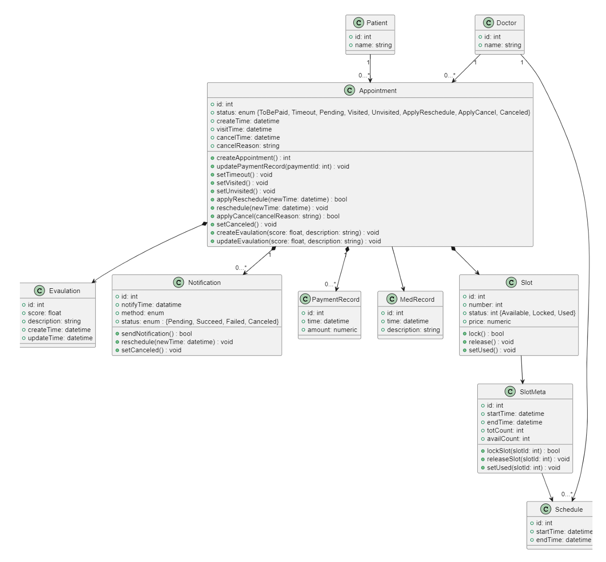

<div class="middle center"> <div style="width: 100%"> # 软件工程课程项目 <hr/> **项目名称：** 综合医院信息管理系统 **项目状态：** 已圆满完成 **小组：** 第四大组 **日期：** 2025年6月 </div> </div> <!-- s --> <div class="middle center"> <div style="width: 100%"> # Part.1 项目概述与需求回顾 </div> </div> <!-- v --> ## 1.1 项目背景与目标回顾 **背景:** * 传统医疗服务模式在资源配置、患者体验、管理效率等方面存在挑战 (**信息孤岛**, **流程繁琐**, **资源浪费**)。<font size="5" color="grey">(类似 Ch.1 Case 1 Brooks提及的大系统复杂性问题)</font> * 信息技术发展 (数字化、智能化) 为医疗行业转型提供了契机。<font size="5" color="grey">(对应 Ch.1 Software Evolution & Changing Nature of Software)</font> * 现有系统不足：部分医院系统功能基础，缺乏深度整合与智能分析；小型机构系统缺失。<font size="5" color="grey">(Legacy Software 需要 Enhance/Extend - Ch.1.1)</font> **项目目标 (已达成):** * **成功开发**了一套集成化、数字化、智能化的医院信息管理系统。<font size="5" color="grey">(目标是提供Value to users - Ch.2.3 General Principle 1)</font> * **有效提升**了医疗服务效率与质量，**优化**了患者就医体验。 * **实现**了医疗资源的精细化管理与优化配置。 * 为医院管理层**提供**了数据驱动的决策支持。 <!-- v --> ## 1.2.1 用户需求分析回顾 **核心用户角色 & 已解决的需求痛点:** <font size="5" color="grey">(对应课堂 Ch.8 Inception - Identify stakeholders)</font> * **患者:** * **需求:** 便捷预约、减少排队、远程问诊、清晰了解病情与费用、个人健康信息管理、隐私保护。 * **痛点解决:** 系统提供了便捷的在线预约、清晰的费用展示和安全的个人健康信息管理功能，有效缓解了挂号难、信息不透明等问题。 * **医生/医护人员:** * **需求:** 高效管理患者病历、合理安排工作时间 (排班/问诊)、便捷查看患者预约、安全合规操作、跨科室协作。 * **痛点解决:** 电子病历系统、智能排班与预约管理模块，显著提高了医护人员的工作效率和协作便捷性。 <!-- v --> ## 1.2.1 用户需求分析回顾 (续) * **医院管理员 (包括各科室主任/财务等):** * **需求:** 统一管理用户权限、监控系统运行、管理医疗资源 (号源、排班、药品、设备、床位、财务)、审计操作、数据统计分析。 * **痛点解决:** 系统提供了全面的后台管理功能，包括精细的权限控制、资源统一调度、数据统计分析，为高效管理和决策提供了有力支持。 <div class="fragment"> **需求分析的清晰度与可移交性：** 我们致力于使需求分析文档（包括用例图、场景描述等）**足够清晰、准确、无歧义**，确保即使项目移交给另一组开发人员，他们也能正确理解并继续实现。 </div> <!-- v --> ## 1.2.2 需求工程过程回顾 * **需求获取 (Elicitation - Ch.8.2):** **通过**分析现有系统痛点、结合小组讨论和模拟用户访谈，进行了深入的需求挖掘。 * **场景分析 (Use Cases - Ch.8.3/9):** **细化并实现**了如“患者首次预约”、“预约时号源已被占用”、“医生处理请假”、“管理员分配号源”等关键场景，并用UML用例图进行可视化。 * **需求建模与规格说明:** **运用**UML工具对需求进行建模，并编写了详细的需求规格说明文档，为后续设计与实现提供了坚实基础。 * **需求验证 (Validation - Ch.8.6):** **开展**了多轮内部评审，确保需求的**一致性、完整性、可行性**。 * **需求管理 (Management):** **明确**了核心需求 (Must Have) 与辅助需求 (Nice to Have)，并**建立了需求变更控制流程**（详见项目管理部分），有效应对了开发过程中的需求变更。 <!-- v --> ## 1.3 已实现的核心功能模块 **前期规定的需求已在系统中全部实现，并通过多轮测试验证。** 1. **用户管理子系统 (Python 实现):** 负责多角色用户 (患者、医生、管理员) 的认证、权限管理。 * 胡峻、宋汝毅、周蔚然、施陶然 (已完成) 2. **在线问诊子系统 (Java 实现):** 提供远程图文/视频问诊、医患沟通功能。 * 周龙、刘展鹏、李琦、竺士元 (已完成) 3. **病历管理子系统 (Java 实现):** 实现电子病历的创建、存储、查询、更新、共享。 * 丁雨桐、林馨、马子茵 (已完成) 4. **网上预约子系统 (Java 实现):** 管理号源分配、患者预约、排班信息。 * 沈棋、赵一帆、黄章涛、向思源 (已完成) 5. **资源管理子系统 (Java 实现):** 管理药品、设备、病房床位、排班、财务等。 * 金杰鹏、吴歆玥、孙若愚、农书艺 (已完成) <!-- v --> ## 1.4 非功能性需求达成情况 (NFRs - Ch.8.2) * **性能 (Performance):** <font size="5" color="grey">(Ch.19.2 Quality Dimension)</font> * **响应时间:** 关键操作**均控制在** < 2-5秒。 * **吞吐量:** **已通过测试**，支持高峰期并发用户数 (核心接口 >1000 QPS)。 * **安全性 (Security):** <font size="5" color="grey">(Ch.19.2 Quality Dimension)</font> * **实现**了数据加密 (传输/存储), 强身份认证, 细粒度权限控制, 操作审计, 防注入/跨站攻击, **确保**隐私保护。 * **可用性 & 可靠性 (Availability & Reliability):** <font size="5" color="grey">(Ch.19.2, Ch.21.7)</font> * 界面简洁直观, 操作便捷, **实现**了跨浏览器/多终端兼容, 系统高可用性 (>99.9%)。 * **可维护性 & 可扩展性 (Maintainability & Scalability):** <font size="5" color="grey">(Ch.19.2)</font> * **采用**了微服务/模块化设计, **遵循**了代码规范, **提供**了清晰的接口文档, **支持**后续功能迭代与演进。<font size="5" color="grey">(为 Legacy Software 演进奠定基础 - Ch.1.1)</font> <!-- s --> <div class="middle center"> <div style="width: 100%"> # Part.2 系统设计回顾 </div> </div> <!-- v --> ## 2.1 设计原则与方法应用 **设计方法回顾:** <font size="5" color="grey">(课堂 Ch.2.1 Layered Technology, Ch.9-12)</font> * **面向对象分析与设计 (OOAD):** 项目中**采用**了类、对象、继承、多态等概念进行建模。<font size="5" color="grey">(Ch.10)</font> * **统一建模语言 (UML):** **运用**了多种 UML 图进行可视化设计 (用例图, 类图, 状态图, 交互图等)。<font size="5" color="grey">(Analysis/Design Modeling - Ch.9-11)</font> **遵循的设计原则:** <font size="5" color="grey">(课堂 Ch.7 Principles that Guide Practice, Ch.12 Design Concepts)</font> * **模块化/微服务化 (Modularity):** 系统**按业务领域划分**为独立的、高内聚、低耦合的服务/模块。<font size="5" color="grey">(Ch.7 Principle #5, Ch.12.3)</font> * **分层 (Layered):** 在各服务内部及整体架构中**采用**了分层思想 (表示层、业务逻辑层、数据访问层)。<font size="5" color="grey">(Ch.13.2 Architectural Style)</font> * **信息隐藏/封装 (Information Hiding):** **通过**接口暴露必要信息，隐藏了内部实现细节。<font size="5" color="grey">(Ch.10.1, Ch.12.3)</font> * **关注点分离 (SoC):** 将不同职责**分离**到不同模块/类。<font size="5" color="grey">(Ch.7 Principle #1, Ch.12.3)</font> * **用户中心设计 (UI Design):** **遵循** Ant Design 设计规范，并应用**界面设计黄金法则** (如用户控制、减轻记忆负担、保持一致性)，提供了高效的用户体验。<font size="5" color="grey">(Golden Rules - Ch.15.1)</font> <!-- v --> ## 2.1.1 设计模式应用 (Design Patterns) 我们在项目中**应用了多种设计模式**来提升代码质量、可复用性和可维护性： * **架构模式 (Architectural Patterns):** * **微服务架构:** 整个系统的顶层设计，实现了服务的独立开发、部署和扩展。 * **分层架构:** 在每个微服务内部，严格遵守表示层-业务逻辑层-数据访问层的分层模式。 * **Model-View-Controller (MVC):** 后端 Java 服务天然地使用了 Spring MVC 模式来分离数据、逻辑和视图。 * **Model-View-ViewModel (MVVM):** 前端 React/AntD Pro 框架采用了类似 MVVM 的思想，通过状态管理实现数据和视图的绑定。 * **企业应用与GoF设计模式 (Enterprise & GoF Patterns):** * **数据访问对象 (DAO) / Repository 模式:** 用于封装数据持久化逻辑，将业务代码与数据源解耦。 * **单例模式 (Singleton):** Spring 框架中的 Bean 默认采用单例模式，确保了服务实例的唯一性。 * **工厂模式 (Factory):** 在一些复杂对象的创建过程中使用，简化创建逻辑。 <!-- v --> ## 2.2 系统架构设计回顾 **采用前后端分离的微服务架构，设计合理，充分满足了业务需求与非功能性需求。** **逻辑架构实现:** <font size="5" color="grey">(类似 Ch.13.2 Layered Architecture 概念，但应用于服务层面)</font> 1. **表示层 (前端):** * **框架:** **Ant Design Pro** (基于 React)，提供企业级最佳实践，**显著降低**开发成本，保证界面专业性与一致性。 2. **应用层 (后端 - 微服务):** * **API 网关:** 实现统一认证、路由、限流、熔断。 * **核心业务服务:** 采用 **Java & Python 混合技术栈**，针对不同业务场景选择最优方案。 * **技术栈:** **1个Python服务** + **4个Java/Spring Boot服务**。 3. **数据层:** * **数据库:** **MySQL 8.0+**，Schema 设计合理，保证数据完整性。 * **缓存:** Redis (提升热点数据访问性能)。 * **消息队列:** RocketMQ (用于异步处理，解耦)。 4. **基础设施:** * 云服务器 (ECS), 日志/监控服务。 <!-- v --> ## 2.2 系统架构设计回顾 (续 1) 2. **应用层 (后端 - 微服务):** <font size="5" color="grey">(每个服务可视为一个 Component - Ch.14.1)</font> * **API 网关:** **已部署并实现**统一认证、路由、限流、熔断。 * **核心业务服务 (通过 Git Submodule 管理与集成):** * **技术栈分布:** 采用混合语言编程（Polyglot Programming）思想，发挥各语言优势。 * **Python (1个服务):** * **用户管理服务** * *(选择理由: Python 框架 (如Flask/Django) 开发效率高，拥有强大的安全库 (如JWT, Passlib)，非常适合快速构建标准化的认证授权服务。)* * **Java/Spring Boot (4个服务):** * 在线问诊、病历管理、网上预约、资源管理服务 * *(选择理由: Spring 生态成熟稳定，性能优异，强类型语言保证了数据密集型和高事务性业务 (如病历、财务) 的严谨性与可靠性。)* <!-- v --> ## 2.3 UML 设计成果展示 (精选) **我们广泛使用 UML 工具进行需求分析与系统设计。** <div class="mul-cols"> <div class="col"> **用例图 (Use Case Diagram - Ch.8.3/9):** *(回顾: 核心业务流程)* <img src="images/image-1.png" alt="用例图" width="30%" style="margin: 0 auto; display: block;"/> </div> <div class="col" style="font-size: 0.9em;"> **类图 (Class Diagram - Ch.10):** *(回顾: 核心实体关系)*  **最终 Schema & 外键关系详见:** **[dbdocs.io](https://dbdocs.io/1978264748/E_Health)** </div> </div> <!-- v --> ## 2.4 接口与构件设计成果 * **接口设计 (API - RESTful):** <font size="5" color="grey">(对应 Interface Design - Ch.12.2/15)</font> * **设计合理:** **遵循**了标准 HTTP 方法, 面向资源设计 URL, 使用 JSON，接口清晰、一致、易于理解和使用。 * **API 文档:** **通过 Apifox** 维护了完整的 API 文档，包含详细数据模型与测试用例，促进了前后端高效协作。 **[Apifox Wiki](https://cbfs62hkmj.apifox.cn/)** * **构件设计 (Component-Level Design - Ch.14):** * **设计合理:** 每个微服务内部的构件都遵循**高内聚、低耦合**原则，职责明确。 * **例如:** **预约服务**中的号源管理、预约逻辑、状态机、通知等构件已稳定运行且易于独立维护。 <!-- s --> <div class="middle center"> <div style="width: 100%"> # Part.3 质量保证与项目管理回顾 </div> </div> <!-- v --> ## 3.1 质量保证措施 (SQA) <font size="5" color="grey">(SQA - Ch.2.2/19/21)</font> **我们建立了贯穿项目全生命周期的质量保证体系。** * **正式技术评审 (Formal Technical Reviews - FTRs):** <font size="5" color="grey">(Ch.20.6)</font> * **需求评审:** 多轮交叉评审，确保需求理解一致、无歧义。 * **设计评审:** 对架构、数据库 Schema (dbdocs.io)、API 设计 (Apifox) 进行了严格评审。 * **代码审查 (Code Review):** 通过 Pull Request 机制强制执行，确保代码符合规范，及时发现潜在缺陷。 * **测试与验证:** * **制定了详细的测试计划**，覆盖了从单元到系统的各个层级。 * **测试方法合理：** 采用**自底向上**的集成测试策略，先保证单元正确，再集成联调，最后进行系统测试。 * **自动化测试:** 实施了单元测试 (Unit)、集成测试 (Integration)、API 功能/性能测试 (Apifox)。 * **系统测试 & UAT:** 完成了端到端功能验证，并邀请模拟用户进行验收测试，收集反馈并修复。 * **配置管理 (SCM):** **有效使用** Git 进行版本控制，分支管理规范，确保了代码的一致性和可追溯性。<font size="5" color="grey">(Ch.17)</font> <!-- v -- > ## 3.2 风险管理 (Risk Management) **我们对项目风险进行了识别、分析和规划，并采取了有效措施。** <font size="5" color="grey">(Ch.25)</font> | 风险类别 | 风险描述 | 应对措施 (已实施) | | :--- | :--- | :--- | | **项目风险** | **需求蔓延 (Scope Creep):** 不断增加新需求导致项目延期。 | **实施需求变更控制流程**；对需求进行优先级排序 (Must-have, Nice-to-have)；定期重审项目范围。 | | **技术风险** | **混合技术栈复杂性:** 管理多语言(Java, Python)环境增加了CI/CD和开发环境配置的复杂性。 | **使用 Docker 容器化技术**统一开发和部署环境；**强制遵守严格的 API 契约** (通过 Apifox)，确保服务间通信与语言无关。 | | **人员风险** | **成员任务冲突/进度不一:** 成员因其他事务影响进度。 | **使用钉钉项目进行任务可视化跟踪**；定期周会同步进度，及时发现并协调解决问题；任务分配考虑冗余。 | <!-- v --> ## 3.3 需求变更管理 **我们建立了明确的需求评审与变更过程。** 1. **变更申请:** 任何成员均可提出需求变更申请，并说明变更理由与预期影响。 2. **影响分析:** 项目组长或相关模块负责人分析变更对范围、成本、进度的影响。 3. **团队评审:** 在项目例会上对变更进行讨论，集体决策是否接受变更。 4. **批准与实施:** 若批准，则更新需求文档、项目计划，并分配资源进行实施。 5. **验证:** 变更完成后，需要经过严格测试进行验证。 **此流程确保了所有变更都经过深思熟虑，有效控制了范围蔓延。** <!-- v --> ## 3.3.1 需求变更管理实例：为预约评价增加文本评论功能 **这个真实的变更案例展示了我们如何应用既定流程来管理需求。** 1. **变更申请 (Change Request):** * **背景:** 在项目中期进行内部测试时，预约子系统的成员发现，原设计的“五星评分”功能无法有效收集患者对医生的具体反馈。 * **提议:** 成员在钉钉项目群中正式提出申请，**建议在预约评价功能中，增加一个文本评论框**，允许患者输入文字评价。 2. **影响分析 (Impact Analysis):** * 项目组长牵头，相关前后端成员分析后得出： * **数据库:** `appointments` 表需增加 `comment` 字段 (`VARCHAR(500)`). * **后端API:** `POST /api/appointments/{id}/rate` 接口需增加 `comment` 参数；`GET` 相关接口需返回该字段。 * **前端界面:** 评价弹窗/页面需增加一个文本输入域。 * **工作量评估:** 预计增加约 **4 人时** 的开发与测试工作。 * **风险评估:** 风险低，属于功能增强，不影响现有核心逻辑。 3. **团队评审 (Team Review):** * 在下一次的周会上，团队讨论了此变更。 * **结论:** 一致认为该变更对于提升用户体验和数据价值意义重大，且额外成本可控。**批准实施该变更**。 4. **批准与实施 (Approval & Implementation):** * 项目负责人更新了钉钉项目看板中的相关任务，明确了新的需求点。 * 相关文档（需求规格说明书、Apifox API文档、dbdocs.io Schema）得到同步更新。 * 前后端成员分别领取任务并完成开发。 5. **验证 (Verification):** * 功能开发完成后，在`dev`环境进行了专项测试。 * **测试用例:** 患者提交带评论的评价 -> 医生/管理员后台能看到完整的星级与文字评论。 * 测试通过后，代码通过 Pull Request 合并入 `main` 分支，变更完成。 <!-- v -- > ## 3.4 项目管理与协作回顾 <font size="5" color="grey">(Project Management - Ch.2.2)</font> * **项目计划与执行:** * **制定了详细的项目计划，** 并通过 **钉钉项目多维表** 进行跟踪，任务、截止日期、负责人清晰明确，**计划执行彻底**。 * **会议与沟通:** <font size="5" color="grey">(Communication Principles - Ch.7.3)</font> * **定期召开项目会议:** 包括小组周会、大组协调会，均按时召开并**有详细的会议纪要**，确保了信息同步和问题及时解决。 * **任务分配:** * **所有组员均有明确的任务分配**（如功能模块开发列表所示）。 * **任务分配合理：** 充分考虑了成员的技术特长、兴趣及工作量，并通过定期沟通进行动态调整，确保了团队协作的高效与公平。 * **协作工具:** **高效利用** 钉钉、ZJU Git、Apifox、dbdocs.io 等工具，**极大提升了**团队协作效率与项目管理水平。 <!-- s --> <div class="middle center"> <div style="width: 100%"> # 总结与 Q&A </div> </div> <!-- v --> ## 总结 * **完整覆盖软件工程各阶段:** 项目**严格遵循**了从**需求工程**<font size="5" color="grey">(Ch.8)</font>、**系统设计**<font size="5" color="grey">(Ch.9-15)</font>、**实现**、**测试**<font size="5" color="grey">(Ch.14/22)</font>到**部署**的完整流程。 * **需求清晰且全部实现:** 需求分析**清晰明确**，前期定义的各项功能**均已实现**并展示。 * **设计合理且应用模式:** **采用了1个Python服务 + 4个Java服务的混合微服务架构**，设计合理，并**有效应用**了多种**设计模式**。 * **质量与过程有保障:** **实施了**包括 **FTRs**、**多层次测试**、**风险管理**、**变更控制**在内的**质量保证措施**。 * **项目管理规范有效:** **制定并彻底执行**了详细的项目计划，**会议与沟通机制完善**，**任务分配明确且合理**。 **本项目已成功完成所有预定目标，系统功能完善，质量达标，过程规范，文档齐全。** <!-- v --> <div class="middle center"> <div style="width: 100%"> # Q & A **感谢各位老师的指导与聆听！** </div> </div>